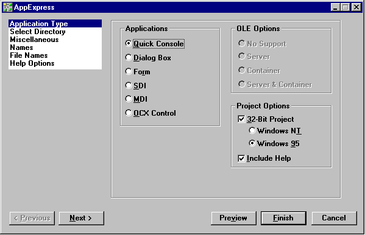
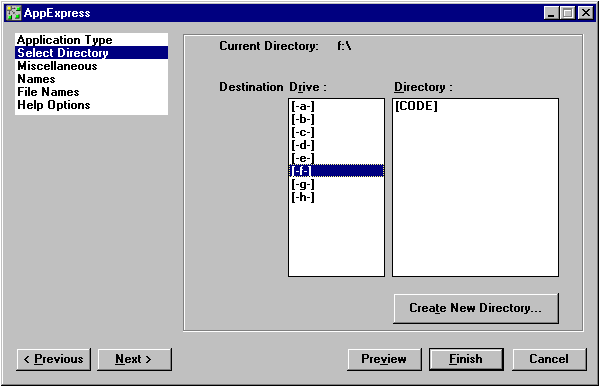
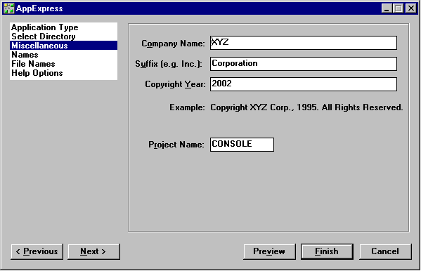
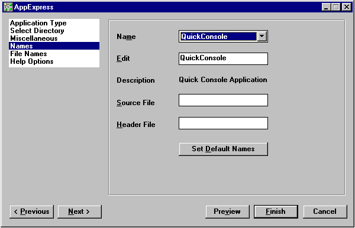
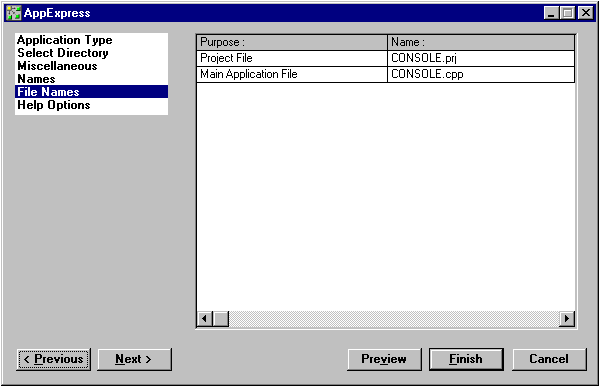
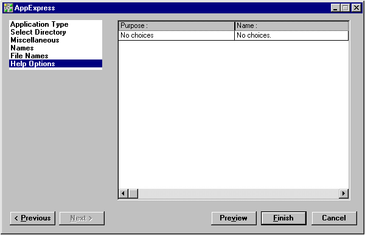
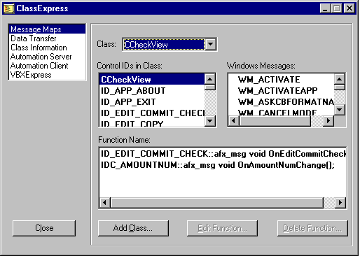
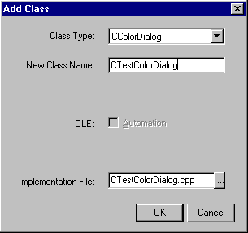

IDDE
Reference
Part 1: Welcome to Digital Mars C++
1. Introducing Digital Mars C++
2. Introducing the IDDE
Part 2: Creating an Application with Digital Mars C++
3. Starting a Project and Defining Workspaces
4. Generating an Application Framework
5. Defining Classes and Their Hierarchies
6. Editing Program Code
7. Adding Look and Feel with Resources
8. Testing an Application
Part 3: Learning Digital Mars C++ by Example
9. Introduction to the Tutorial
10. Lesson 1: Create the DOS Application
11. Lesson 2: Generate an Application Framework
12. Lesson 3: Customize the Interface
13. Lesson 4: Add Messages with ClassExpress
14. Lesson 5: Add a Dialog Box with ClassExpress
Part 4: More about Creating Programs
15. More about Projects and Workspaces
16. More about Project Build Settings
17. More about AppExpress
18. More about ClassExpress
19. Class Editor Reference
20. Hierarchy Editor Reference
21. Text Editor Reference
22. Using Version Control
Part 5: More about Testing Programs
23. Controlling and Configuring the Debugger
24. Commands Available in Debugging Mode
Part 6: About Managing Resources
25. ResourceStudio Resource Editor
26. Dialog Editor
27. Menu, Accelerator and String Table Editors
28. Bitmap, Cursor, Icon, and Font Editors
29. Version Information and Custom Resource Editors
Part 7: Appendixes
A. Expression Evaluation
B. IDDE Settings and Command-Line Options
C. Using NetBuild
|
4. Generating an Application Framework
This chapter introduces application frameworks and the steps
necessary to generate and build on such a framework. This process
uses two tools: AppExpress and ClassExpress.
Before reading this chapter, take look at the material in
Starting a Project and Defining Workspaces
in the IDDE.
AppExpress creates both an application framework (according to
specifications you provide) and the project in which that framework
resides.
More about AppExpress
and
More about ClassExpress
are the reference chapters for the AppExpress and
ClassExpress tools.
What Is an Application Framework?
An application framework is a standardized skeleton architecture for
an object-oriented application. The framework is composed of C++
classes derived from base classes in the Microsoft Foundation Class
(MFC) library.
Using a framework to build an application dramatically shortens its
development time. All the files needed to create the application are
included in the skeleton program. Standard user interface
components such as windows, menus, and toolbars are already
defined. Some of the necessary connections between the defined
C++ classes are established automatically.
With a framework as a starting point and using the MFC library, you
can build many different types of applications by:
- Adding or changing user interface components with
ResourceStudio (see
Chapter 7, "Adding Look and Feel with Resources")
- Creating new C++ classes, class methods, and class
member variables with ClassExpress
- Writing code
As you build application frameworks with AppExpress and
ClassExpress, you will become familiar with message maps. Message
maps summarize, within a data structure or table, all of the links
between Windows messages and the methods (also called functions)
of a particular class that process those messages. Each entry in a
message map is a pair, consisting of a message identifier and a
method that responds to that message. The method is said to handle
the message. Methods referenced in message maps are also called
message handlers, or simply handlers.
Because message maps are used by MFC to route Windows
messages to the messages' handlers, they provide the essential
translations needed to present the event-driven model of the
Windows API in an object-oriented guise. By automating the creation
and maintenance of message maps, AppExpress and ClassExpress
relieve you of much error-prone drudgery, and allow you to spend
more of your development time writing code that implements
functionality.
The following sample message map was automatically generated by
AppExpress for an MDI-style application framework:
BEGIN_MESSAGE_MAP( CMainView, CView)
//{{ AFX_MSG_MAP( CMainView)
// NOTE -ClassExpress will add and
// remove mapping macros here.
// DO NOT EDIT what you see in these
// blocks of generated code !
//}} AFX_MSG_MAP
// Standard printing commands
ON_COMMAND( ID_FILE_PRINT, CView::OnFilePrint)
ON_COMMAND( ID_FILE_PRINT_PREVIEW,
CView:: OnFilePrintPreview)
END_MESSAGE_MAP()
Creating a Framework with AppExpress
This section describes how to launch AppExpress and use it to
generate an application framework.
Launching AppExpress
From the IDDE main window, choose AppExpress from the Tools
menu. This opens the window shown in Figure 4-1.

[Figure 4-1 AppExpress window]
Looking at the AppExpress window
The AppExpress window contains:
- A listbox at the upper left displaying the steps required
to create an application framework. The current selection
from this list determines which page of options is shown
in the larger pane to the right.
- A pane on the right showing the options associated with
the currently selected step.
- Buttons below the panes that you can use to navigate
among the steps, preview your work, or generate a
framework.
To navigate through the six pages of options, click on the name of a
step in the steps list, or click on the Next or Previous button.
Alternatively, press Control-n, where n is a number between 1 and 6
representing the selected step's position in the steps list.
Specifying an application framework
AppExpress divides the process of building a framework into six
steps:
- Select an application type
- Select a directory for the project
- Provide copyright information and project options
- Specify class names
- Specify source file names
- Specify help file names
These steps, which are briefly outlined here, do not have to be
completed in this order. However, you will find it convenient to
complete the first step— specifying application type options— before
proceeding to any other step. All later steps contain some options
that depend upon your choices in this step.
Selecting an application type
To select an application type:
- Select Application Type from the steps list in the
AppExpress window.
- Select an application type by clicking on a radio button
in the Applications group. There are six categories of
applications, two of which— SDI and MDI— can be made
OLE clients and/or servers.
Check the Include Help box if you want AppExpress to generate
files from which a Windows help file can be created. Check the 32-
Bit Project box if you are building a 32-bit application. See
Chapter 17, "More about AppExpress"
for the details of how the 32-Bit
Project check box combines with the selected application type to
determine what AppExpress generates.
Selecting application type options sets default options for many of
the other steps in AppExpress. For example, if you select Dialog
Box, AppExpress automatically creates three C++ classes with default
class names in your skeleton program. You can change these
defaults; for example, you can modify the default class names by
selecting Names from the steps list.
Selecting a directory for the project
To select a directory for your source files and project file:
- Select the Select Directory item from the steps list.
The Select Directory options page opens as shown in
Figure 4-2.
- Select the appropriate drive and directory. Or, click on
Create New Directory to create and name a new
directory. AppExpress suggests the project name as the
new directory name, but you may change that default.

[Figure 4-2 Select Directory options]
Providing copyright information and project options
You can supply copyright information for your source code, and set
the project's name, stack size, and heap size as follows:
- Select Miscellaneous from the steps list. The
Miscellaneous options page opens as shown in
Figure 4-3.

[Figure 4-3 Miscellaneous options]
- Provide copyright information in the appropriate fields.
AppExpress uses this information to write a copyright
notice in the comment header of all of your application's
source files, and to construct the application's About
dialog box.
- Specify the project name in the appropriate field. Stack
and heap sizes can be changed later in the Project
Settings dialog box.
Specifying class names
To view and change the names of C++ classes or their associated
source files:
- Select Names from the steps list. The Names options
page opens as shown in Figure 4-4.
- In the options pane, select a class from the Name drop-down
list automatically created by AppExpress. The class
names included in this list depend on the application
type you have selected.
- If you like, you can edit the selected class name. Note,
however, that C++ class names follow a standardized
naming convention. Using the default names allows your
program's structure to be easily understood by others.
- In the appropriate field, type the names of the header
and source files in which AppExpress should place the
class source code.
Note:
The CAboutDlg class, which represents your
application's About Box class, is always created in
the same header and implementation files as the
CWinApp-derived class (for example, CSDIAPP).
To discard any changes you have made on this page, click on the Set
Default Names button.

[Figure 4-4 Names options]
Naming source files
To edit filenames automatically generated by AppExpress:
- Select File Names from the steps list. The File Names
options page opens as shown in Figure 4-5.
- In the options pane, click on the filename you want to
change. The files listed depend on the application type
you have selected. Their names correspond to their
functionality within the application.
- Edit the filename, but remember that these changes
could make it harder for someone else to identify the
purpose of the file.

[Figure 4-5 File Names options]
Specifying help file names
To view or change the names of the files that the help compiler uses
to generate online help files for your application:
- Select Help Options from the steps list. The Help
Options options page opens as shown in Figure 4-6.

[Figure 4-6 Help Options options]
Note
If you selected Quick Console or Dialog Box as the
application type, or if Include Help is not selected
in the Application Type options page, then you
have no help options.
- Edit the filenames if you want. Note, however, that any
changes could make it harder for someone else to
identify the purpose of the file.
Generating an application framework
At this point, you have selected an application type and the directory
in which the application project files will reside, and you may have
customized various class names or filenames. AppExpress can now
generate your application framework in the form of a skeleton
program.
Click on the Finish button in the AppExpress window. AppExpress
generates the project and its source files, as you specified, hands it
off to the project system, and closes.
Note
If you checked the Include Help box among the
Application Type options, then you will need to
build the help file for your application. You do this
by running the makehelp. bat file that
AppExpress creates in your project directory.
Your skeleton program is ready. You can now build the program
from within the IDDE, or you can add to your program by using
other Digital Mars C++ tools. The next section shows how to enhance
your application's C++ classes by using ClassExpress.
Building on a Framework with ClassExpress
AppExpress cuts the work involved at the beginning of the
application-building process. ClassExpress, on the other hand,
enhances productivity throughout the rest of the process. You use
this tool to flesh out the skeleton application produced by
AppExpress.
Specifically, you can use ClassExpress to:
- Write message maps
- Create new classes derived from existing classes
- Create new class methods mapped to specific messages
- Create new class member variables (that is, data variables
that are members of a class) mapped to specific user-interface
objects
- Create new classes that can be OLE2 automation servers
or clients
- Create new classes that act as interfaces to Visual Basic
Custom Controls (also known as VBXs)
This chapter describes the first two of these options: writing message
maps and creating new classes derived from existing classes.
Message maps, defined in "What Is an Application Framework?" in
this chapter, are discussed in greater detail in
Chapter 17, "More about AppExpress."
You can use ClassExpress immediately after creating an application
framework as well as at later points in development. For example,
you probably want to wait until you have created some dialog boxes
with ResourceStudio (see
Chapter 7, "Adding Look and Feel with Resources"
) before mapping class member variables to user interface
objects.
Launching ClassExpress
From the IDDE main menu, launch ClassExpress by choosing
ClassExpress from the IDDE's Tools menu.
Launching ClassExpress opens the window shown in Figure 4-7.

[Figure 4-7 ClassExpress window]
Looking at the ClassExpress window
The ClassExpress window contains:
- A listbox at the upper left presenting the different kinds
of code that ClassExpress can generate
- A pane on the right showing the page of options
associated with each selection from the list at the upper
left
To navigate through the selections, click on the name of a selection
in the list. Alternatively, use the key combination Control-n, where n
is a number between 1 and 6 representing the position in the
selections list of the selection to which you want to move.
Writing a message map with ClassExpress
Message maps are tied to particular C++ classes. In ClassExpress, you
can add to an existing message map by adding new linkages
between messages and class methods. Or you can add a new
message map for an entirely new class.
ClassExpress runs from within the IDDE or as a stand-alone
application. If run from within the IDDE,
ClassExpress will be loaded with the IDDE's open project if there is
one; otherwise, it prompts to open an existing project (which
also opens the project in the IDDE's project system).
As an example, the following steps demonstrate how to add a
message handler to the CAboutDlg class of an SDI application
generated by AppExpress:
- Select Message Maps from the listbox. (If you just started
ClassExpress, this should already be selected.) The
ClassExpress window is displayed as shown in Figure
4-7.
- Select the class CAboutDlg from the Class drop-down list.
The contents of the three other lists in the options pane
are updated to reflect the following selection:
- Select CAboutDlg from the Control IDs in Class list. The
list of Windows messages changes, revealing a long list
of messages to which your dialog box could respond.
- Double-click on WM_ACTIVATE. Notice that the method
OnActivate (in its fully prototyped form) is added to the
Function Name list.
Now, whenever your About dialog is activated, the OnActivate
method is called in response to the dialog window receiving the
message WM_ACTIVATE. With the four above steps, you have
created an association between the message WM_ACTIVATE and the
method OnActivate, and added it to the message map for the
CAboutDlg class.
Adding a new class to your application
Adding new classes to your application is as easy as creating a
message map. To add a class:
- Select Message Maps from the listbox. (If you just loaded
ClassExpress, then this should already be selected.)
- Click on the Add Class button. The Add Class dialog box
shown in Figure 4-8 opens.

[Figure 4-8 Add Class dialog box]
- Select a class type from the Class Type drop-down list.
This type specifies the base class from which your new
class will be derived. The list displays names of MFC
classes without the initial letter 'C', thereby allowing you
to navigate rapidly within the list by typing the first letter
of a class type. For example, typing 'V' selects the View
class type.
- The New Class Name field becomes active, displaying a
suggested name for the new class. Edit this name as
appropriate.
- If you selected CDialog or CFormView, then the field
Dialog ID is displayed. Move to this field and choose the
resource ID of the dialog that you want to associate with
the new class's window.
- Check the OLE Automation box if you want your new
class to be a programmable OLE object. If you choose
this option, any other Windows application that is an
automation client can use the OLE interface you define
for this object.
- If you check the OLE Automation box and you are
deriving a new class from the CCmdTarget or CWnd
class, the Creatable check box is displayed. Check this
box if you want other applications to be able to create
the OLE automation object that you are defining.
- If you check the OLE Automation check box and you are
deriving a new class from the CCmdTarget or CWnd
class, you must also type a name in the External Name
field. This is the name that is exposed to other
applications that may want to use your OLE automation
object.
- Decide whether to edit the implementation filename of
your new class (shown in the last field in the Add Class
dialog box). By default, the base part of the filename is
the name of your new class without the initial letter 'C',
and truncated if necessary.
- Click OK to add the new C++ class to your application. If
you want, you can create message mappings for your
new class by using the steps outlined in the previous
section.
This section on ClassExpress showed how easy it is to write a
message map and to create a new class. By just clicking on a check
box, you can also add OLE automation support to your application.
In addition, ClassExpress can bind your classes to your dialog boxes
and generate C++ wrapper classes for Visual Basic custom controls
(VBXs). It also provides extensive support for building OLE servers
and containers. For more information on these features, refer to
Chapter 18, "More about ClassExpress."
|
 Home
| Search
| CTG
| RTL
| IDDE
| STL
Home
| Search
| CTG
| RTL
| IDDE
| STL